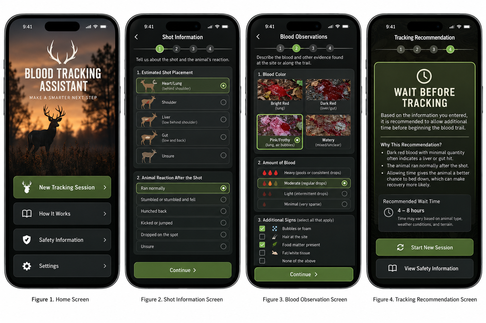

Application Prototype
Modern Technology: Reliable Recovery
Modern Technology: Reliable Recovery
Blood Tracking Assistant is designed to provide a digital interface that supports the tracking and recovery of wounded game. By entering field observations, hunters are empowered to make informed recovery decisions using tracking recommendations.
Key Features
- Blood Trail Analysis: Users input blood color, consistency, and quantity.
- Shot Placement Assessment: Users input information regarding shot placement and animal response.
- Recovery Recommendations: The proposed application provides suggestions for waiting periods, animal behavior, and recovery strategies.
Example Application Screens
The images below show the planned design of the application. These are example screens rather than a functioning mobile app.

Our Goal
Combining modern technology with traditional hunting expertise to support ethical hunting, wildlife management, and game recovery.
This application is a proposed educational tool. Tracking suggestions should not replace a hunter's judgment, local regulations, or help from an experienced tracker.